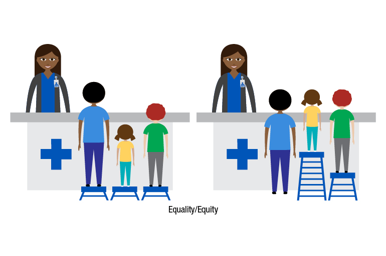

Combating Disease
Healthcare is a basic necessity in human society and having the ability to access healthcare is a fundamental human right. Even with the modern advancements of society, billions of people all over the world still lack access to essential healthcare services leading to increased preventable diseases and high mortality rates. All which highlight the importance of accessible healthcare.
Accessible healthcare plays a pivotal role in combating disease on multiple fronts. When healthcare services are readily available and easily accessible to all individuals, it facilitates early detection and diagnosis of diseases, enabling prompt intervention and treatment. This early intervention not only improves health outcomes but also helps in preventing the spread of contagious diseases. Moreover, accessible healthcare ensures that individuals have regular access to preventive care such as vaccinations, screenings, and health education, which are essential in reducing the incidence of various illnesses.
The spread of preventable disease could easily be combatted through accessible care centers and vaccination programs. Timely vaccinations can protect societies from deadly outbreaks. The quick formulation and distribution of a vaccine for COVID-19 is a good example as to how prompt vaccination can reduce the further spread of disease while the early diagnosis and treatment of disease can prevent illnesses from becoming severe and causing high mortality rates.
Accessible healthcare can also be used to counter non-communicable diseases like diabetes, heart diseases and cancer. Through early detection, these diseases could be remedied and help patients live healthy, stress-free lives.
Public-Private Partnerships
Collaborations between governments, non-profit organizations, and private sectors can lead to innovative solutions that bridge the gap between accessibility and affordability. Along with such fruitful partnerships comes improvements in healthcare infrastructure such as the establishment of clinics and hospitals that are crucial in order to expand access to healthcare, especially in remote and underserved areas.
These collaborations leverage the strengths of both the public and private sectors to expand healthcare services. By combining resources, expertise, and infrastructure, Public Private Partnerships can enhance healthcare accessibility in several ways. They enable the establishment of healthcare facilities in remote or economically disadvantaged regions where government resources alone might be insufficient. This expansion of healthcare infrastructure brings essential services closer to communities in need, reducing barriers to access such as distance and affordability.
PPPs often improve the quality of healthcare services by leveraging private sector innovation, technology, and management practices. This infusion of private sector efficiency can lead to better-equipped facilities, streamlined processes, and enhanced patient experiences. Moreover, PPPs can also address specific healthcare challenges through targeted initiatives, such as disease prevention campaigns, maternal and child health programs, or chronic disease management efforts.
Health equity
Healthcare being accessible ensures that everyone, regardless of background has access to essential medical lifelines. It reduces disparities by addressing barriers like cost and language and empowering communities to take control of their well-being. Through advocacy and policy changes, accessible healthcare challenges systemic inequities, striving for universal coverage and anti-discrimination measures. It embodies the principle that healthcare is a human right, promoting dignity and equality for all individuals and communities regardless of status.
Economic Impact
Healthcare being accessible has a profound economic impact, positively influencing various aspects of society. It promotes productivity by ensuring that individuals can maintain good health and continue participating in the workforce. When people have access to healthcare services, they are more likely to seek treatment for illnesses promptly, reducing the duration of sickness and minimizing work breaks. This, in turn, leads to increased productivity levels and economic output.
Accessible healthcare contributes to poverty reduction by preventing catastrophic healthcare expenditures that can plunge families into financial hardship. When healthcare services are affordable and easily accessible, individuals are less likely to face financial burdens associated with medical bills, which allows them to allocate their resources towards other essential needs such as food, education, and housing.
Economic growth is also fostered through employment opportunities within the healthcare sector. As demand for healthcare services increases, so does the need for healthcare professionals, support staff, and infrastructure development. This generates jobs and stimulates economic activity, particularly in regions where healthcare services are expanding.
Innovation and entrepreneurship is promoted by providing a conducive environment for research, development, and investment in healthcare technologies and pharmaceuticals. This generates a thriving healthcare industry that not only contributes to economic growth but also leads to advancements in medical treatments and healthcare delivery systems.